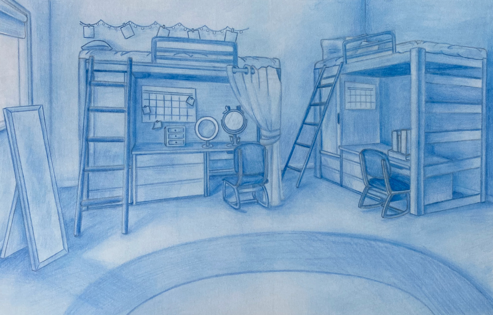

Project Overview
Objective
Create a detailed interior environment drawing to demonstrate perspective, spatial relationships, lighting, and environmental storytelling. The project focused on accurately rendering a furnished living space while conveying depth, atmosphere, and visual balance with a monochromatic color palette.
My Role
Illustrator responsible for concept development, perspective construction, environmental rendering, and final presentation.
Tools
Blue colored pencil, drawing paper, observational references, perspective drawing techniques, and traditional rendering methods.
Deliverables
Completed interior environment illustration, high-resolution digital image of artwork, and portfolio-ready project documentation.

Process
Approach
- Planning & Composition: Established the room layout, furniture placement, and focal areas to create a balanced composition.
- Perspective Construction: Built the scene using perspective principles to accurately represent spatial relationships and architectural elements.
- Environmental Rendering: Developed room details, furnishings, and decorative elements to create a believable and cohesive interior space.
- Lighting & Value Development: Applied shading and tonal variation to establish depth, dimension, and visual hierarchy throughout the composition.
- Refinement & Presentation: Refined line work, adjusted contrast, and strengthened key details to improve clarity and overall visual impact.
Results
Outcomes
- Produced a polished interior environment illustration demonstrating perspective and spatial visualization skills.
- Successfully conveyed depth, structure, and atmosphere using a limited monochromatic color palette.
- Showcased foundational drawing principles applicable to visual communication, design visualization, and environmental illustration.